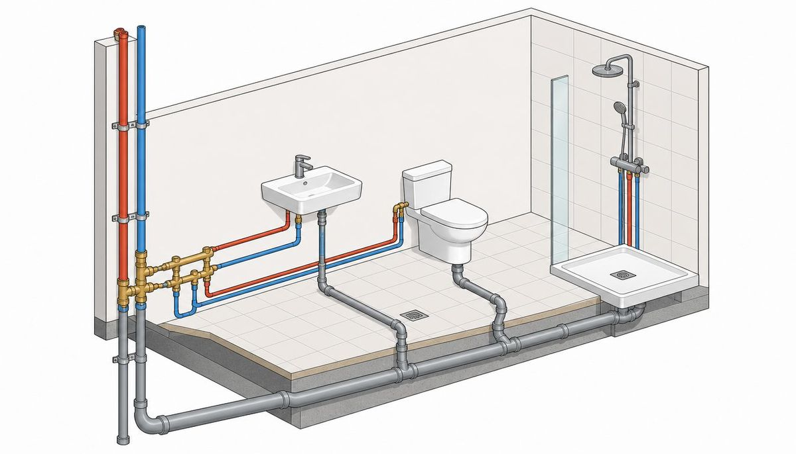

в санузле 4 м² — 4–6 точек воды и 3–4 отвода канализации. Выводы ХВС/ГВС ставят на 500–600 мм от пола, унитаз — по выпуску 300–400 мм от стены, уклон Ø50 — 20–30 мм на метр, Ø110 — 12–20 мм на метр. Разводка «под ключ» с заменой стояка — 45 000–120 000 руб. Ошибка в 30 мм по высоте или 10 мм по уклону стоит вскрытия плитки и 25 000–60 000 руб.
Состав санузла и точки
| Прибор | Вода | Канализация | Привязка |
|---|---|---|---|
| Раковина | ХВС + ГВС 1/2" | Ø50 | выводы 550–650 мм, слив по центру чаши |
| Унитаз | ХВС 1/2" | Ø110 | выпуск 300–400 мм от чистовой стены |
| Ванна | ХВС + ГВС 1/2" | Ø50 | выводы 600–750 мм, по центру борта |
| Душевая | ХВС + ГВС 1/2" | Ø50 или трап | смеситель 1000–1100 мм |
| Стиральная машина | ХВС 1/2" | Ø50 с сифоном | выводы 600–700 мм, слив 500–600 мм |
| Полотенцесушитель | ГВС + обратка | — | по проекту стояка, 800–1200 мм |
Каждая точка — это не только труба, но и запорный кран, и ревизия. На 4 м² санузла реально уместить 5 точек и коллектор в коробе 200×300 мм.
Стояки и схема разводки
| Схема | Плюсы | Минусы | Цена |
|---|---|---|---|
| Тройниковая (последовательная) | дешевле на 20–30 % | давление падает при двух открытых кранах | 25 000–55 000 руб. |
| Коллекторная | равное давление, отдельные краны | нужен короб или ниша | 45 000–90 000 руб. |
| Гребёнка в сантехшкафу | обслуживание без вскрытия плитки | минус 200–300 мм площади | 55 000–110 000 руб. |
Для санузла с душем и стиральной машиной коллекторная схема окупается: при тройниковой разводке включение стиралки роняет давление в душе на 0,3–0,6 бар, и вода «скачет» по температуре.
Высоты выводов

| Точка | Высота от чистого пола | Отступ от стены |
|---|---|---|
| Раковина, ХВС/ГВС | 550–650 мм | 50–80 мм |
| Ванна, ХВС/ГВС | 600–750 мм | по центру борта |
| Душевой смеситель | 1 000–1 100 мм | 50–70 мм |
| Унитаз, ХВС | 200–250 мм | слева от выпуска, 150–200 мм |
| Стиральная машина | 600–700 мм | в соседней нише |
Высоты считают от ЧИСТОВОГО пола: стяжка и плитка добавляют 60–120 мм. Разметка от чернового пола — самая частая причина «смеситель на уровне груди».
Канализация: диаметры и уклоны
| Участок | Диаметр | Уклон | Комментарий |
|---|---|---|---|
| Унитаз → стояк | 110 мм | 12–20 мм/м | короткий участок, без поворотов 90° |
| Раковина, ванна → стояк | 50 мм | 20–30 мм/м | сифон с гидрозатвором 50–70 мм |
| Стиральная машина | 50 мм | 20–30 мм/м | сифон и обратный клапан |
| Трап душевой | 50 мм | 20–30 мм/м | с ревизией и сухим затвором |
Повороты — двумя отводами по 45°. Один 90° на горизонтальном участке — гарантированный засор через 1–2 года: в резком повороте оседает мыло и волосы.
Шум: как не слышать соседей
| Мера | Эффект | Цена |
|---|---|---|
| Шумоизоляция стояка 2–3 мм | −8…−12 дБ | 300–700 руб./м.п. |
| Короб из ГКЛВ с минватой 50 мм | −15…−20 дБ | 1 500–3 000 руб./м.п. |
| Трубы в штробе с гильзой | −5…−8 дБ | 400–900 руб./м.п. |
| Крепление через виброгасящую прокладку | −3…−5 дБ | 100–250 руб./точка |
Стояк в углу санузла — главный источник шума. Короб с минватой 50 мм и разрывом от стены 10–15 мм убирает до 20 дБ: шум слива становится слышен как шорох.
Типовые ошибки и их цена
| Ошибка | Последствие | Исправление |
|---|---|---|
| Разметка от чернового пола | смеситель выше на 60–120 мм | вскрытие плитки 25 000–50 000 руб. |
| Уклон канализации 5–10 мм/м | засор через 6–12 месяцев | перекладка лежака 15 000–35 000 руб. |
| Тройниковая разводка на 5 точек | падает давление в душе | коллектор 20 000–45 000 руб. |
| Скрытая резьба в стене | протечка без доступа | вскрытие и замена узла |
| Нет шумоизоляции стояка | слышно соседей на 15–20 дБ громче | короб задним числом — 6 000–15 000 руб. |
Самая дорогая ошибка — перенос унитаза «на глаз»: если уклон не выдержан, через полгода появляется засор, а исправить его можно только вскрыв плитку и стяжку. Проверять уклон нужно до заливки, пока труба видна.
Порядок работ
- Согласовать перенос стояка с управляющей компанией, если он планируется.
- Составить схему точек с привязкой к чистовому полу и стенам.
- Отключить воду, демонтировать старые трубы и приборы.
- Смонтировать стояк, коллектор и отводы канализации с уклонами.
- Опрессовать систему 6–9 бар в течение 30 минут.
- Закрыть штробы, сделать гидроизоляцию и уложить плитку.
Смета 2026
| Позиция | Санузел 4 м² | Стоимость |
|---|---|---|
| Трубы PPR 20/25 мм | 18–25 м | 2 000–4 000 руб. |
| Коллектор с кранами | 1 шт. | 4 000–9 000 руб. |
| Канализация Ø50/110 | 6–10 м | 2 000–5 000 руб. |
| Замена стояка | 1 стояк | 8 000–20 000 руб. |
| Штробление и заделка | 15–20 м | 8 000–18 000 руб. |
| Монтаж точек | 5–6 шт. | 8 000–20 000 руб. |
| Шумоизоляция и короб | 3–4 м.п. | 6 000–15 000 руб. |
Итого 38 000–91 000 руб. без приборов и плитки. Перенос унитаза на 1 м от стояка — отдельная работа с насосом или подъёмом пола: 25 000–60 000 руб.
Чек-лист перед штроблением
- Схема точек с привязкой к чистовому полу готова.
- Уклоны канализации проверены уровнем.
- Стояк согласован, если меняется его положение.
- Опрессовка 6–9 бар выдержана 30 минут.
- Шумоизоляция стояка смонтирована до короба.
Частые вопросы
Можно ли перенести унитаз в другой угол?
Можно, если уклон канализации сохраняется. При удалении больше 1 м от стояка нужен насос-сололифт (15 000–35 000 руб.) или подъём пола на 100–150 мм.
Какая высота вывода под раковину правильная?
550–650 мм от чистового пола. Ниже 500 мм мешает сифон, выше 700 мм видно подводку под чашей.
Нужен ли коллектор в санузле 4 м²?
Желателен: он даёт отдельные краны на каждую точку и стабильное давление. Место — короб 200×300 мм за унитазом или в нише.
Почему пахнет из канализации?
Нет гидрозатвора или он пересыхает. У трапа нужен сухой затвор, у стиральной машины — сифон с высотой затвора 50–70 мм.
Можно ли оставить чугунный стояк?
Можно, если он без трещин и свищей. Перед заменой приборов стояк проверяют на протечки и при необходимости меняют на полипропилен.
Сколько стоит разводка санузла под ключ?
С работой, штроблением и шумоизоляцией — 38 000–91 000 руб. без приборов, плитки и гидроизоляции.
Можно ли сделать разводку без штробления?
Можно: трубы в коробе по стене или в плинтусе с кабель-каналом. Короб съедает 100–150 мм глубины, но ремонт и обслуживание дешевле — доступ без вскрытия плитки.
Какой диаметр труб выбрать: 20 или 25 мм?
До коллектора — 25 мм, от коллектора к приборам — 20 мм. На 4 м² санузла этого достаточно при давлении 2–3 бар на вводе.